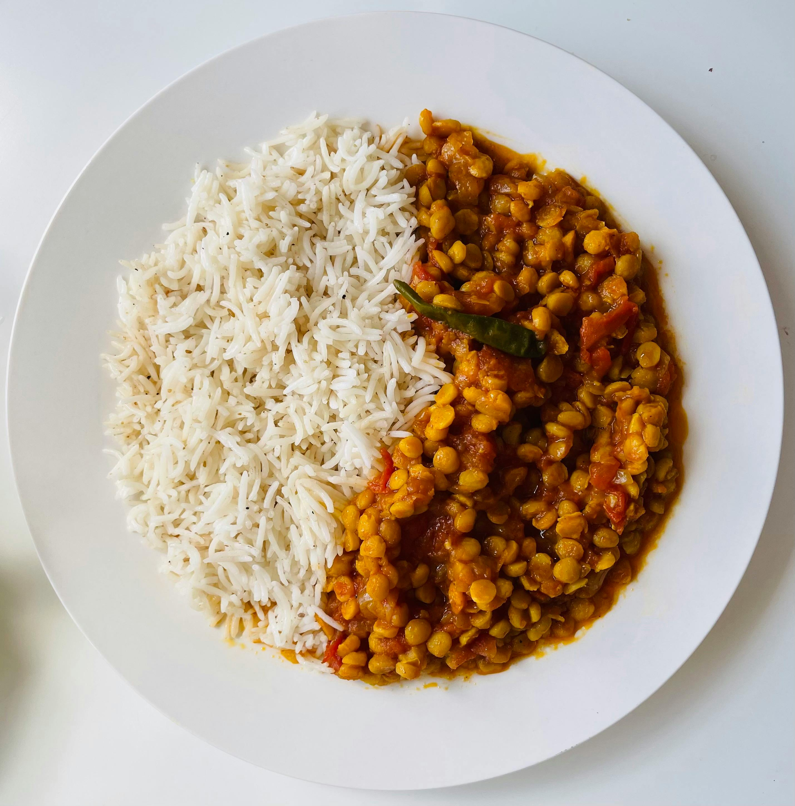

Red Lentil Curry

This red lentil curry is rich and hearty. Its great as a maincourse meal
rather than a side dish like the more traditional Indian dhal. Dont let
the ingredient faze you — this is an easy dish to make. This dish is
excellent served with basmati rice.
Ingredients
- 2 cups red lentils.
2 cups red lentils
- 3 cups water, or more as needed
- 1 tablespoon vegetable oil
- 1 large onion, diced
- 2 tablespoons curry paste
- 1 tablespoon curry powder
- 1 teaspoon ground turmeric
- 1 teaspoon ground cumin
- 1 teaspoon chili powder
- 1 teaspoon salt
- 1 teaspoon white sugar
- 1 teaspoon minced garlic
- 1 teaspoon minced fresh ginger
- 1 (14.25 ounce) can tomato puree